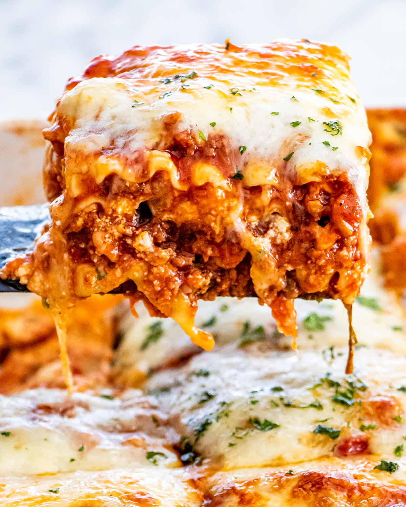

Lasagna Recipe

Lasagne are a type of pasta,
possibly one of the oldest types,
made of very wide, flat sheets.
Either term can also refer to an Italian
dish made of stacked layers of lasagne
alternating with fillings
Ingridents:
- 1 (16 ounce) package lasagna noodles
- 1 pound lean ground beef
- salt and pepper to taste
- 1 (16 ounce) jar spaghetti sauce
- 1 clove garlic, minced
- ½ pound shredded mozzarella cheese
- ½ pound shredded Cheddar cheese
- 1 pint ricotta cheese
Steps:
- Bring a large pot of lightly salted water to a boil.
Add pasta and cook for 8 to 10 minutes or until al dente; drain.
- Preheat oven to 350 degrees F (175 degrees C).
In a large skillet over medium-high heat,
brown beef and season with salt and pepper;
drain. Stir in spaghetti sauce and garlic and simmer 5 minutes.
- In a medium bowl, combine mozzarella, Cheddar and ricotta;
stir well. In 9x13 inch pan, alternate layers of noodles,
meat mixture and cheese mixture until pan is filled.
- Bake in preheated oven for 30 minutes,
or until cheese is melted and bubbly.